Digital Design
FPGA Blackjack Game
An interactive game of Blackjack running on an Intel Cyclone V FPGA (DE1-SoC board), written in Verilog, built in Quartus Prime and verified via ModelSim. The player competes against the dealer to get as close to 21 as possible without going over.
Skills
- Verilog
- Quartus Prime
- ModelSim
- DE1-SoC
- Cyclone V FPGA
- Finite State Machines
- LFSR
- PS/2 Input
- 7-Segment Display
- Digital Logic
Running on Hardware
Score, dealer hand, and player hand share the six 7-segment displays, two digits each. Input comes from an external PS/2 keyboard - Hit (H), Stand (S), Double Down (D) - a switch made after the on-board keys proved slow and unresponsive.
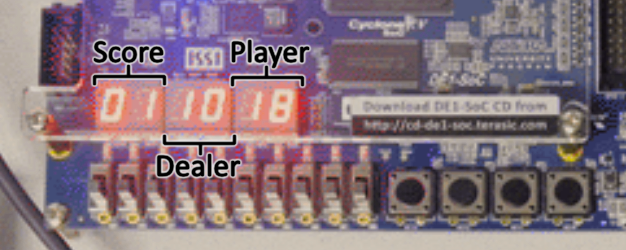
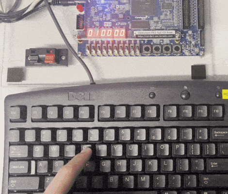
Game Flow
Gameplay, dealer behaviour, and win/lose conditions are structured as multi-state finite state machines. From Player Decision, a Hit deals a card and checks for a bust, a Double Down deals exactly one card then automatically stands, and a Stand hands control to the dealer before the hands are compared.
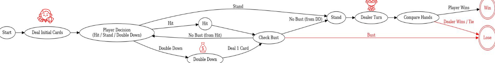
System Architecture
PS/2 input, the card generator, and a one-second signaler all feed a central game logic block, which drives the 7-segment displays and an audio module triggering win, lose, and deal sounds from ROM.
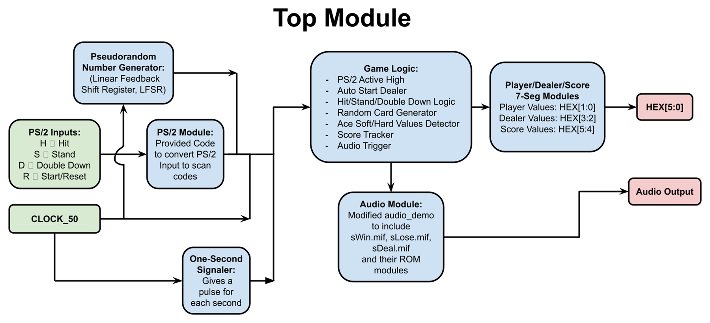
Random Card Generation
Cards come from a pseudo-random generator built on a linear feedback shift register (LFSR). Combinational logic forces the raw output into a 2 to 14 range, then maps it onto a real card: 14 becomes an Ace, 11 through 13 are valued at 10 as face cards, and 2 through 9 pass through unchanged.
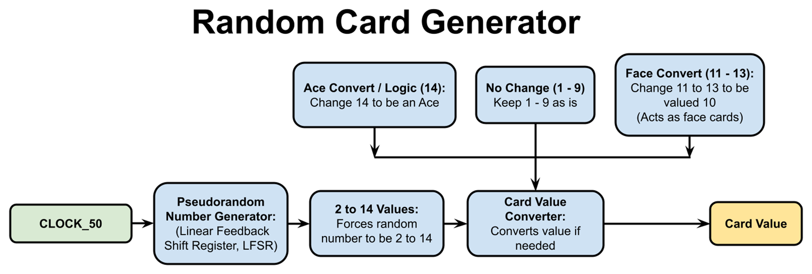
Dealing Order
Cards deal one per second in proper Blackjack order rather than summing all at once. Getting that right meant rebuilding the dealing FSM around a one-second pulse and a turn counter.
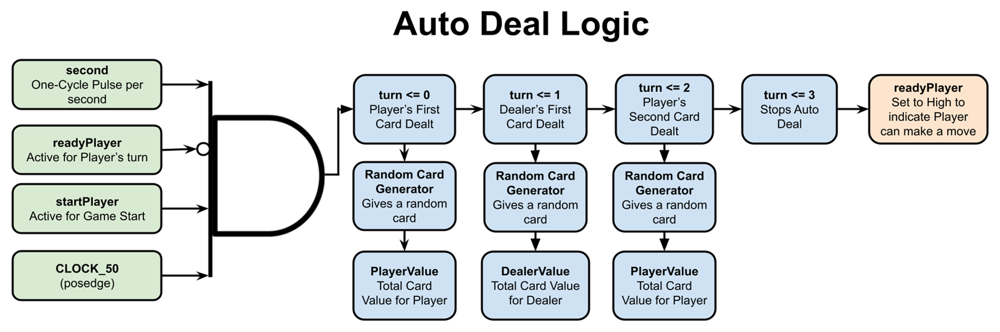
Player Actions
Each action is gated on the same conditions - the player's turn, the game started, and no win or loss yet - then fans out to deal a card, update the running total, and check for 21 or a bust.
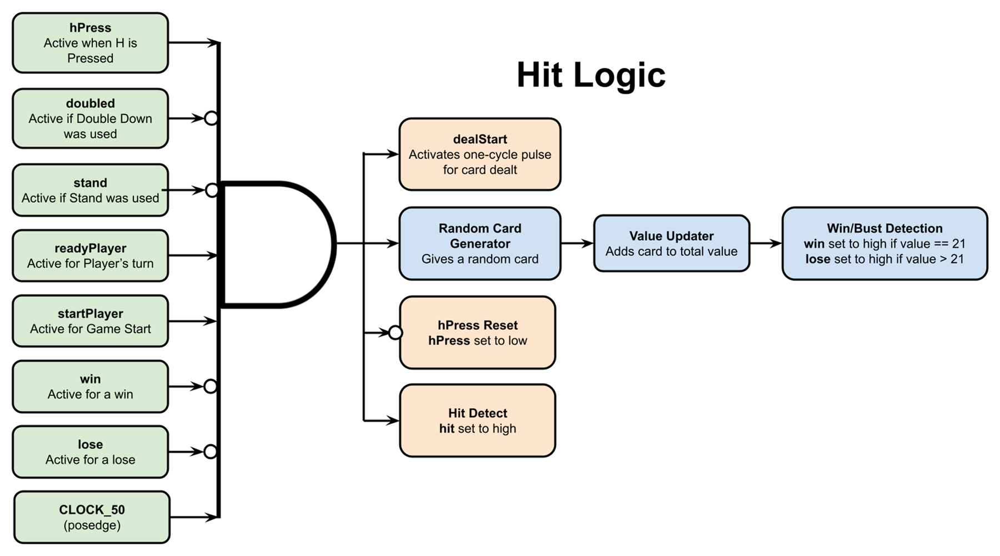
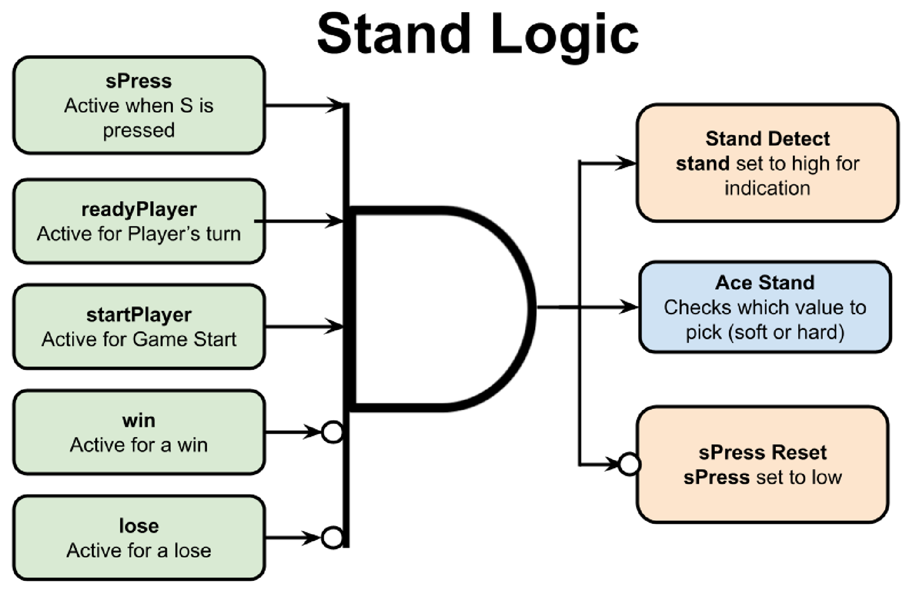
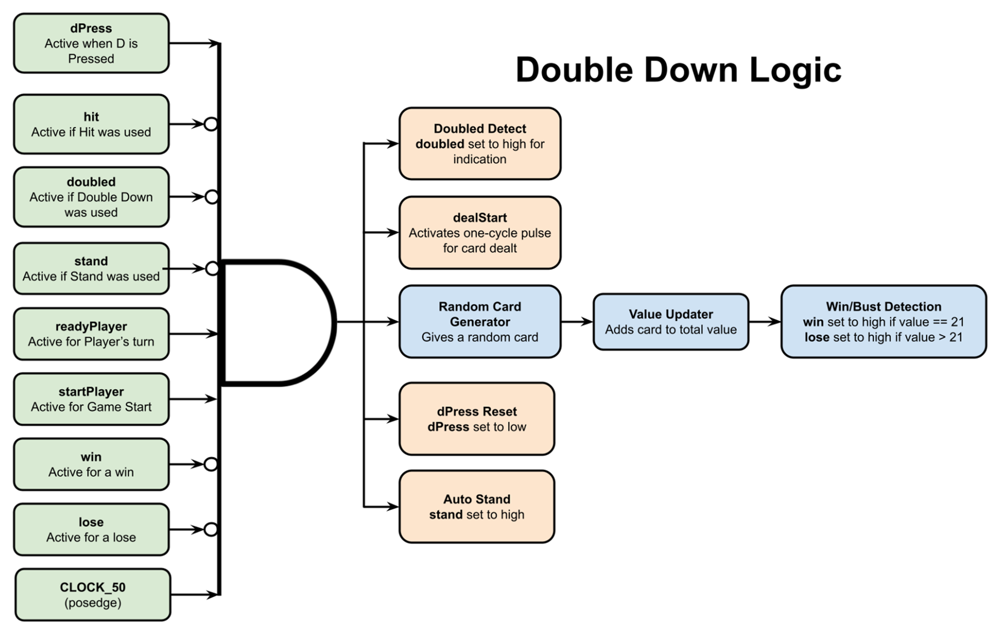
Soft and Hard Aces
The hardest part was dynamic card valuation. An Ace is worth 1 or 11 depending on the hand, so the design tracks a soft total and a hard total in parallel and selects between them on a stand. While the soft total is still valid, the displays alternate between the two at 1 Hz so the player sees both.
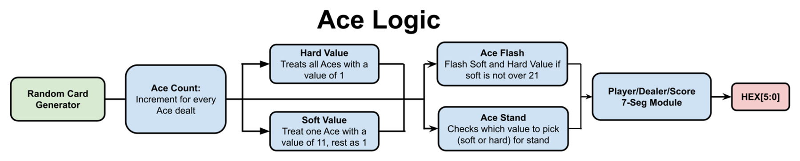
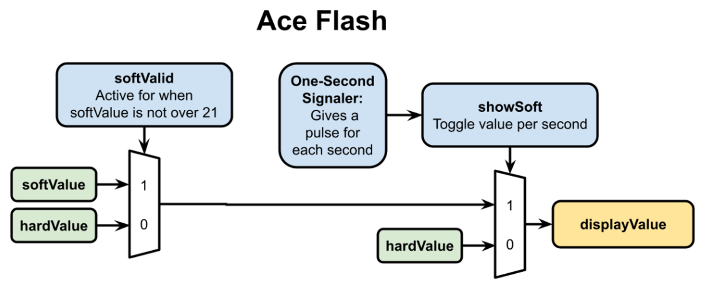
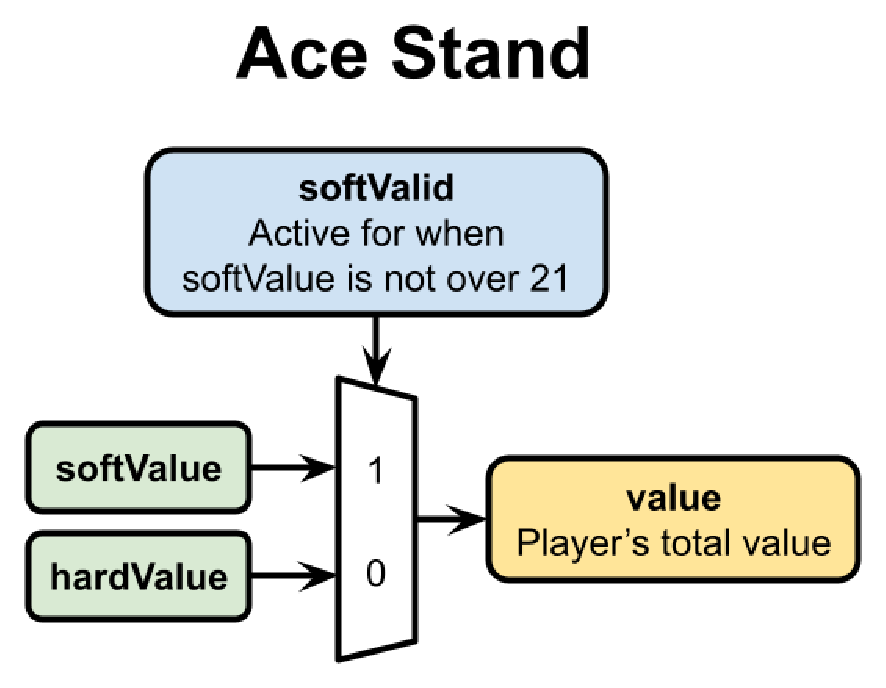